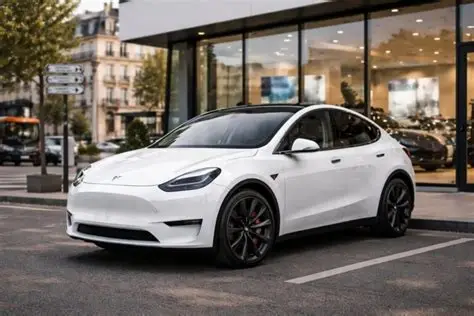

Tesla Inc. est un constructeur automobile de voitures électriques fondé en 2003 à San Carlos, en Californie, par Martin Eberhard et Marc Tarpenning. Entré au capital en 2004, Elon Musk, son actuel dirigeant, en a fait un constructeur automobile connu du grand public par un marketing de large envergure.

Tesla a fait l'objet de poursuites judiciaires, de boycotts, d'un examen minutieux de la part du gouvernement et de critiques journalistiques, découlant d'allégations de multiples cas de représailles contre les lanceurs d'alerte, violations des droits des travailleurs (notamment le harcèlement sexuel et les activités antisyndicales), défauts de sécurité ayant conduit à des douzaines de rappels de véhicules, ainsi que des déclarations controversées de Musk, notamment la promesse exagérée concernant la technologie d'aide à la conduite de l'entreprise et les délais de lancement des produits.